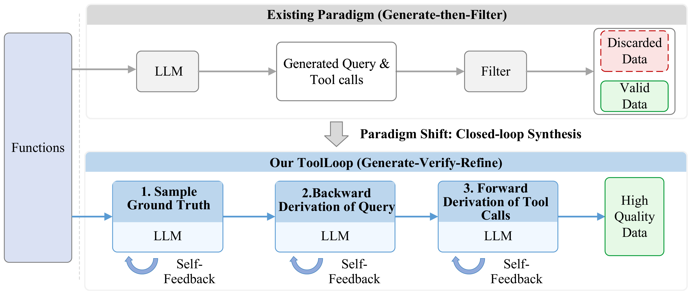
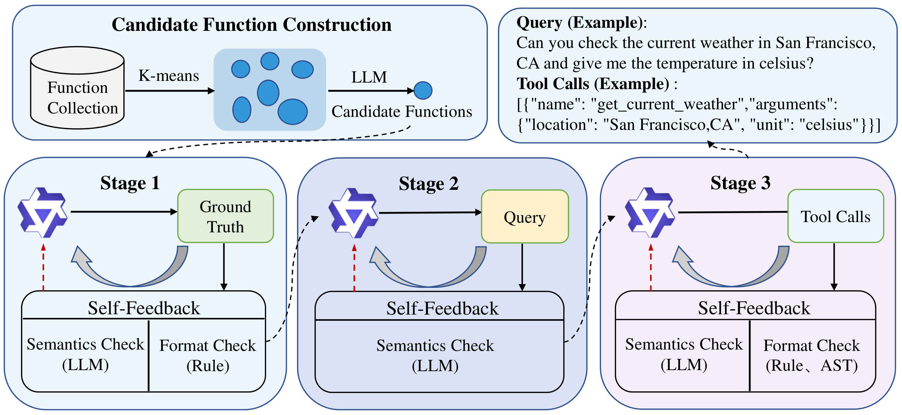
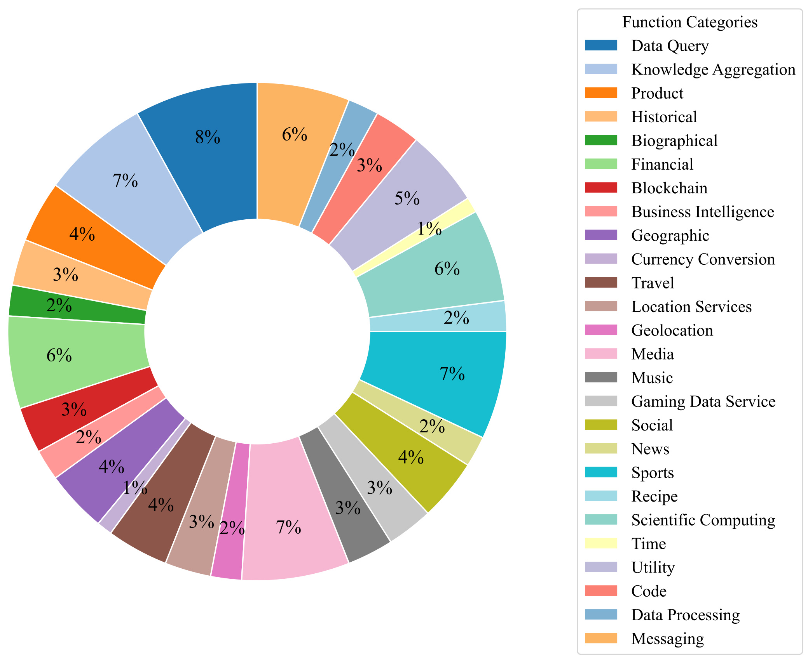
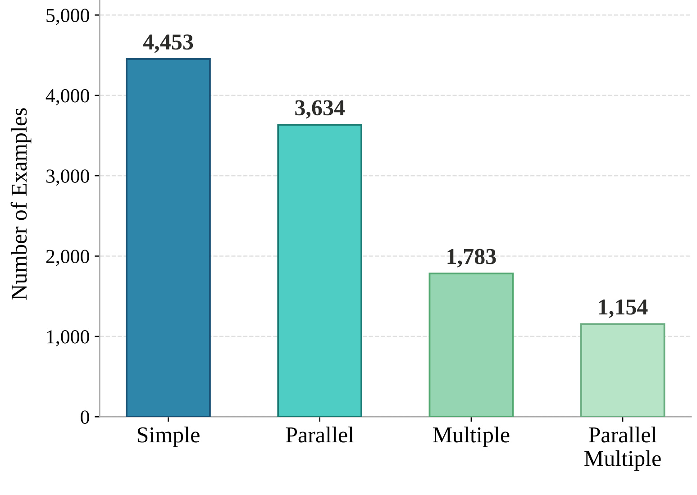
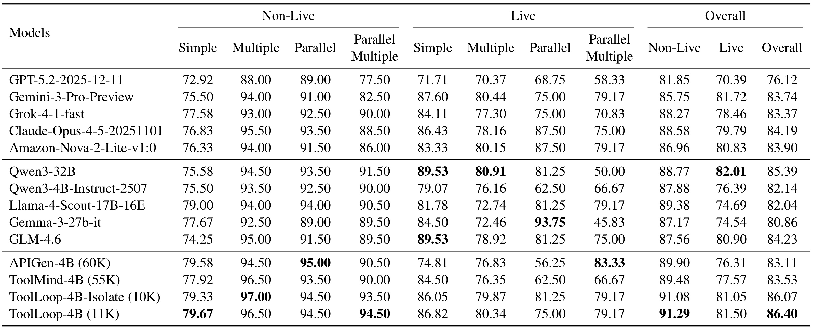
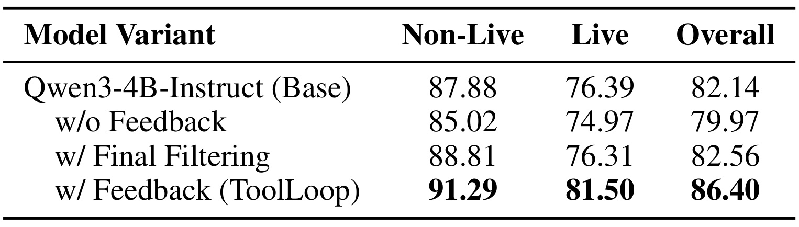
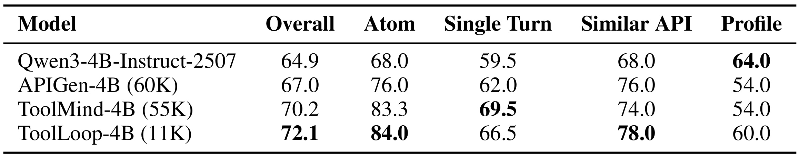
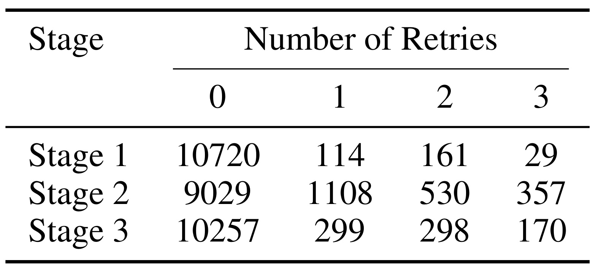

ToolLoop：通过分解生成与动态自反馈合成工具调用数据
论文：ToolLoop: Closed-Loop Tool-Use Data Synthesis via Decomposed Generation and Dynamic Self-Feedback
作者：Min Zeng、Yuzhou Liu、Zhenyu Cao、Hanxiu Chen、Heng Li、Caiquan Liu、Yafei Wen、Xiaoxin Chen
机构：vivo AI Lab
来源与日期：arXiv，2026-09-08 首次公开，本文依据 v1 全文；记录日期为2026-09-10。
论文入口：arXiv:2609.09072
代码与项目：本轮未发现并核验到本文独立官方代码或项目页。
ToolLoop 研究怎样把较少的合成示例变成更可靠的工具调用监督。它先决定目标函数组合，再倒推用户请求，最后独立生成参数化调用，并在三个阶段分别检查和修复错误。阅读重点是分阶段对齐为何比最后一次过滤更有效，以及数据质量优势能否跨工具集合、跨评测集保留。
工具的多样性使模型难以一次选对函数；只在生成末端接受或丢弃样本，既不给纠错反馈，也可能扭曲保留数据的特征分布。缺少中间监督时，用户请求与最终工具调用之间的逻辑不一致仍可能进入训练数据。
1. 背景和问题
1.1 工具调用监督的难点在关系正确
普通问答监督主要要求回答与问题相符，工具调用还要求模型把语言意图映射为可执行接口。一个请求通常同时涉及工具选择、调用次数、参数名、类型、实体值和输出结构。即使自然语言流畅，模型也可能选错语义相近的接口；即使函数名正确，也可能把省略的参数凭空补出；即使参数看起来合理，也可能把两个有先后依赖的调用错误地当成并行任务。论文把这些关系纳入数据合成环节，而不是期待小模型在微调时自行纠正错误标签。
这里的高质量并非单指文本写得自然。一个天气接口要求城市和温度单位，请求明确给出旧金山以及摄氏度，调用参数才有直接依据；若请求只说“看看那边天气”，合成器却填入城市，标签就引入了用户没有提供的信息。格式检测可能认为这个 JSON 完全合法，但语义上并未完成可靠的信息提取。这类监督会鼓励模型猜参数，使看似能够执行的调用偏离用户意图。ToolLoop 希望在训练之前暴露和纠正这类问题。
原文讨论的主要场景是单轮函数调用。Simple 只有一个候选函数且调用一次；Multiple 有多个候选函数但只需选择一个；Parallel 对同一个函数发起多次独立调用；Parallel Multiple 则从多个候选中选择一个或多个函数，允许重复并行调用。尤其需要注意，Multiple 并不表示多步骤工作流，它强调候选选择难度。Parallel 也不包含先搜索再读取搜索返回地址这种依赖链。若把这些术语直接理解为复杂智能体规划，就会夸大论文覆盖的任务范围。
这四种场景分别暴露不同的数据缺陷。简单场景容易检查参数抽取；多候选场景需要有意义的干扰工具，才能训练精细区分；并行场景需要在一条请求中自然表达多次调用；并行多候选场景还要同时保证组合合理、参数齐全和调用互不依赖。仅增加生成数量可能同时增加噪声。合成器可以把互不相关的工具拼到同一请求里以满足调用数量，却损害真实使用场景的连贯性。因此数量和能力覆盖之间没有自动成立的等价关系。
1.2 末端过滤为何仍会留下训练偏差
论文概括的传统路线是先生成完整的请求和调用，再通过规则或模型进行末端过滤。它实现直接，合格样本进入数据集，不合格样本被丢弃。但当工具库扩大后，选择、请求组织和参数填充的错误会叠在同一个成品里。过滤器即使识别出错误，也未必保留错误发生的位置，更不会告诉生成器应修复哪个约束。下一次重新生成可能重复同类错误，或者为了避开错误转向更短、更简单的请求。
这种筛选会产生一个机制性偏差：如果复杂工具组合更容易失败，保留集就可能更多由容易通过的简单样本构成。最终合格率看起来不错，并不代表复杂语义被同样充分学习。论文提出用局部修复保留已经选定的合理函数组合，让失败请求围绕既定目标继续改进，从而减少难样本一错就丢的机会。这个解释提供了方法动机，但全文没有给出各难度桶在过滤前后完整的分布对照，因此应把降低分布偏差视为有机制依据的假说，而非已经全面测量的结论。
另一个问题是组件各自合理而整体不一致。目标函数组合可能要求两次查询，反向生成的请求只明确提出一次；请求可能同时要求查天气和换算货币，最后调用却只覆盖天气；参数也可能来自生成器自己想象的背景。单独检查每一个文本片段都很难发现这种跨阶段错位。ToolLoop 的立场是先建立可审计的中间目标，再让后续内容对齐它。相较于只为完整样本打一个分数，这种设置更容易给出具体且能够实施的修改建议。
动态自反馈也应准确理解。这里没有训练一个每次失败后更新参数的在线学习系统，反馈主要被写回提示词，驱动下一次生成。负责下游调用的四十亿参数模型随后使用整理好的样本微调；它在评测时直接输出调用，不额外运行数据合成阶段的三个回路。因此，数据生成时的计算开销与上线推理时的模型开销必须分开看。训练材料少可能利于微调和存储，但不自动意味着获得这些材料更省钱。
1.3 这篇论文真正检验什么
ToolLoop 最直接的研究问题是：在固定小模型容量和非推理输出方式下，结构化合成及局部纠错能否比堆积更多现成合成数据得到更好的工具调用能力。它使用十一千条左右样本，与六万条 APIGen、五万五千条 ToolMind 训练的数据中心基线比较。更有解释力的是同一框架内的消融：不做反馈、只做最后过滤、做完整反馈。如果这三个变体差异明显，才比较接近回答纠错过程是否有用，而不只是展示新的训练集超过旧训练集。
还需要排除模型仅熟悉评测函数这一解释。原始函数池来自 ToolBench 与 BFCL，训练合成工具与评测候选存在潜在重叠。作者额外构建 Isolate 版本，先移除与 BFCL 评测候选重叠的函数再合成，保留约一万条训练示例。它只能检验特定层面的函数集合重叠，不足以排除基础模型预训练见过相关资料、同义接口残留或更广义的任务模板相似。隔离后性能接近意味着缩小一种替代解释，而不是完整的数据污染证明。
跨基准 ACEBench 则把关注点从单一调用准确率扩到原子操作、单轮意图、相近接口和用户画像选择。对推荐或个性化系统而言，画像维度尤其值得保留：一个模型可以更准确地执行显式参数，同时更不愿意利用用户偏好。论文结果确实出现了这种张力。因此，本文与大模型方向的联系明确在工具使用数据治理；与推荐的联系是个性化能力可能在通用工具微调中受损的提醒，不能把静态工具评测直接当成推荐业务收益。
理解这一边界还有助于区分“可执行接口”与“已经执行验证的样本”。工具池来自具有接口定义的来源，并不意味着每条合成调用都真实提交到了服务端。服务端可能拒绝一个类型合法但业务上不存在的编号，也可能对相同查询返回随时间变化的信息。本文首先保证请求、接口定义和生成参数在静态层面一致，其次通过下游评测检验这种监督是否有用。把两层证据拆开，才能既认可数据构造上的改进，又避免把未测量的运行可靠性误写成结论。
2. 方法
2.1 场景分类与候选函数构造
本文没有可复用的核心公式。方法章节通过场景定义、流程图、约束清单和附录提示词描述算法，没有给出新的训练损失或数学更新式。贡献主要体现在合成过程的拆分与检查接口。一条样本依次经过三个产物：目标函数名称序列、自然用户请求、带具体参数的调用列表。每个产物通过检查后才成为下一阶段输入，目标序列为语义一致性提供明确参照。

图1上半部展示一次生成完整请求与工具调用，再由过滤器分成有效和丢弃两条路径；下半部把一次生成拆成三个节点，分别在节点下放置反馈回路。左侧同一函数集合连接两种流程，说明变化集中在生成与验证组织方式，而不是更换工具接口。需要沿图中的横向箭头和弯曲箭头同时阅读：横向箭头代表通过阶段检查之后继续前进，回环代表当前产物需要重写。最后的高质量数据是经过局部约束筛选的训练样本，并不是实时 API 执行成功记录。图中没有展开具体检查规则，下一张方法图才区分语义、格式和语法职责。ToolLoop 的反馈不是最终数据集上的统一质量分，也不是在推理时强制小模型执行三个阶段；它是在离线合成时尽可能使错误停留在可定位的环节。保留已经成立的前序目标会让修复更聚焦，同时也意味着前序误判可能限制后续修复方向。图本身提出结构性解释，效果大小还要由同框架消融验证。另一个区别在于丢弃发生的时机：上方只在完整样本生成后发现问题，下方可以在函数组合阶段就阻断不合理任务，避免继续为无效目标写请求和填参数；也可以在目标已经通过之后只修请求，保留已有生成成果。这种局部性使反馈内容更具体，但只有检查本身正确时才有价值。若第一阶段误把依赖调用认作并行，后两阶段再流畅也可能只是把错误目标写得更像真样本，因此需要分别检查每个关口的可靠性。
候选函数构造对应原文第3.2节。直接随机抽样难以形成合理语义组合，把整个函数库交给模型又受到上下文长度限制。作者先将函数描述编码为向量，再使用 K-means 聚成语义相近的组，最后让语言模型从每组挑选属于同一使用场景的函数。实验用 Qwen3-Embedding-8B 编码，5281个接口划为26组，平均每组约二百个函数。这个规模是覆盖丰富度与提示词长度的工程折中，原文没有提供聚类数扫描证明26最优。聚类帮助生成器接触可组合的候选集合；训练完成的小模型并不需要保留这一向量编码和聚类流程。
2.2 目标序列、反向请求与正向调用

图2把候选集合如何进入第一阶段，以及三个阶段各自接收何种检查画得更清楚。第一阶段输出 Ground Truth，即函数名称序列，语义检查关注组合是否合理，规则检查约束结构和调用数；第二阶段输出 Query，主要依赖模型判断自然语言与目标调用是否相符；第三阶段输出 Tool Calls，再叠加规则与 AST 检查，确认具体参数和输出语法。绿色中间框不是被训练网络的隐层，而是可以保存、重试和审计的显式文本对象。右上天气示例把旧金山、摄氏度的自然语言请求映射为位置和单位参数，说明最终任务仍是把用户明确提供的信息落实到接口。底部反馈区域返回当前阶段生成器，虚线连接通过检查后的流程衔接。请求是否多暗示了一个工具，仅凭 JSON 解析无法判定；而整数被写成浮点数，可以通过客观检查阻断。将两类检查组合起来，才有机会同时处理语义对齐和硬格式约束。整张图没有真实执行结果的返回箭头，因此不能被解释成环境交互闭环。右上示例还表明参数来源有两层：用户请求规定具体地点与单位，函数定义规定这些值应填入什么字段，两者共同约束最终调用。一个验证器若只比对字段类型，就可能漏掉城市实体错误；若只看请求大意，又可能放过错误字段名。因此图中的规则和语义分工应落实为不同失败原因，而不是最后合并成无法追溯的总分。三阶段都保留产物，也为后续人工抽查提供了明确位置。
第一阶段的目标函数序列是后续合成的锚点。对于非并行场景，作者随机选择单个目标函数；对于并行场景，让模型选择能够在同一合理情境中独立调用的函数组合，调用数为二到四，允许同一函数重复。独立性要求任何调用都不能等待另一个调用的返回值。附录提示词把它写成所有调用在同一时刻发起，因此缺少中间结果的调用应直接排除。序列顺序可以表达用户意图的叙述优先级，却不代表数据流依赖。以重复天气查询为例，不同城市都由请求提供就可以并行；先找当前位置再查天气则不符合该类别。
第二阶段根据目标序列和相关函数定义反向生成用户请求。请求应恰好覆盖目标调用，不多也不少；必需参数都必须具体出现在用户语言里，并遵守类型与格式约束；表达又应像自然人的连贯要求，避免机械罗列接口指令。第5.1节说明，此阶段输入的是目标链实际涉及的函数，而非完整候选池，以减少上下文成本。好处是请求与目标更容易对齐，代价是生成器此时看不到所有干扰工具，不能据此断言请求一定能够区分库中每个近义接口。这也解释了为什么后续工具选择和跨基准验证仍然必要。
第三阶段以请求和候选函数为输入，独立正向生成完整调用。附录要求根据请求分析应选哪些工具，而非直接照抄第一阶段函数名，然后生成符合标准调用格式的结果。参数必须有用户文本或接口默认值作为依据，禁止占位符，也禁止捏造 schema 不存在的参数；可选参数既未出现又无默认值时应省略。输出要求 arguments 为合法 JSON 字符串。正向推导形成一次一致性检查：如果反向请求遗漏目标所需信息，独立调用就可能无法满足目标。它仍不是严格数学双射证明，因为生成器和验证器可能共有偏差，但更容易定位一次性自编请求和标签所隐藏的错位。
2.3 阶段局部反馈与错误记忆
动态自反馈把语义验证器、确定性规则、AST解析组合起来。语义验证器在第一阶段查意图连贯和并行独立性，在第二阶段查请求覆盖与必需参数，在第三阶段查调用是否忠实于请求。规则负责名称、结构、类型等客观约束，AST负责可解析性。解析成功只意味着某些结构错误被排除，并不意味着服务端一定接受参数，更不意味着工具返回结果正确。原文举出地理名称被误当成城市的语义落地错误：字符串类型合法不足以满足城市级实体要求，符号检查与语义检查无法完全互相替代。
一旦当前阶段失败，重试提示保留原始任务、失败输出以及能够执行的修改意见。括号不匹配应明确指出参数字段的括号错误，而非仅给出不合格。附录三份提示词都保留历史反馈，要求修复最新问题时不能重新引入旧问题，相当于寻找全部已知约束的交集。模型默认接受反馈，只有反馈与 schema 或可验证事实矛盾，而且能给出具体证据时，才允许保留先前做法。这样避免无限服从明显错误反馈，但也对生成器提出较强的自我证据判断要求，原文没有量化这个例外分支被使用的频次与正确率。
每阶段允许一次初始生成，最多再试三次；全部检查通过才继续，仍不能通过就丢弃。三次是重试次数，不是总生成次数。后期修复尽可能围绕已验证的函数组合进行，避免复杂样本被一律删掉。作者观察到多数可修复错误在一两次内解决，而顽固样本常有深层语义问题。这支持有限重试的实用选择，但没有和更大上限做受控收益曲线比较，不能断言三次对所有工具领域都是最佳预算。迁移时应保存每轮失败类别、提示长度和修复轨迹，判断重试是在收敛还是重复同一误判。
三阶段语义验证都使用 Qwen-Max，随后保留数据用于微调 Qwen3-4B-Instruct-2507，评测直接输出调用且不附带推理轨迹。ToolLoop 的效果是把合成过程中的对齐知识压到小模型参数里。原文未提供新的损失，也没有证明反馈可在推理时免费恢复错误；它验证的是更可靠监督能否改善直接调用能力。生成模型选择、验证器提示细节、学习率和更多超参数尚需代码或补充配置确认，不能仅凭流程图视为完整可复现系统。
3. 实验结果
3.1 函数池、训练分布与评测口径

图3展示5281个接口覆盖的领域，圆环和右侧图例包括数据查询、知识聚合、金融、旅行、地理位置、媒体、科学计算、消息等。它说明候选池并非只围绕天气场景构造，也帮助理解为什么先做语义聚类：不同领域接口描述差异很大，随机搭配容易拼出不自然的请求。需要分清领域分布与能力分布，这张图统计接口类别，不统计训练样本中的参数复杂度，也不统计测试失败类型。相同领域可同时含简单与复杂接口，多领域覆盖也不能保证模型面对新 schema 时稳健。图上不少类别占比仅几个百分点，圆环百分数经过取整，不能精确还原每类接口数量。论文没有附上每个领域的下游准确率，因此不能据整体86.40推断金融、地理或消息类别都获得同等收益。这张图提供来源覆盖的基本证据，还需要和调用类型分布一起看，才能了解训练材料有哪些结构性倾向。

图4给出11024条最终样本的精确分类计数：Simple 为4453条，Parallel 为3634条，Multiple 为1783条，Parallel Multiple 为1154条，对应约40.4%、33.0%、16.2%、10.5%。它说明十一千是近似规模，具体分析应使用11024作为重试统计的分母。其次，简单与同函数重复调用合计约占七成三，同时包含多候选选择与并行调用的类别只有约一成。这个构成并不否认反馈价值，但限制了纠错已经消除分布不平衡的表述：论文没有声称四类均匀，也未证明这套比例最优。它展示的是实际保留集。另一个容易误读的地方是调用次数，Parallel 样本每条可以包含多次调用，所以样本数不能直接当作函数调用数或标签 token 数。评价数据效率时既要看条数，也要看类别组成、文本长度和接口复杂度，否则一条很长的多工具样本与一条简单样本被同等计数，会隐藏监督量差异。
基础模型是非思考版本 Qwen3-4B-Instruct-2507，最大训练序列长度为16k token，训练两轮；使用 swift 框架，多节点环境中每节点配有四张48GB NVIDIA L40s。原文没有给出完整训练时长与节点总数，因此硬件说明不能换算为确定成本。ToolLoop 与 Isolate 采用相同基础模型、格式规范和非推理评测设置。BFCL-v4 在文中考察2501个测试实例，表1分 Non-Live 和 Live，再各分四种调用场景。Live 是基准子集名称，结合作者承认没有真实环境反馈，不能译作现场执行成功率。表注注明比较快照最后更新于2025-12-16，这些模型排名属于论文快照，不代表记录当天的实时排行榜。
3.2 BFCL 主结果与函数隔离

表1最直接的同规模模型结论是 ToolLoop-4B 综合86.40%，相对基础模型82.14%提高4.26个百分点；相对 APIGen-4B 的83.11%提高3.29个百分点，相对 ToolMind-4B 的83.53%提高2.87个百分点。APIGen 使用60K样本，ToolMind 使用55K，ToolLoop 标记11K，因此它表现出更高的训练样本利用效率。这里应使用百分点描述绝对差异，不能把3.29个百分点写成准确率相对提升3.29%。表中列出多个商业模型与更大开放模型，但最稳妥的解释仍来自相同4B模型与不同合成数据的比较。商业模型横向排名还受版本、解码接口和基准适配影响，不能扩大为通用智能体能力排名。
把表1拆开，ToolLoop 的 Non-Live 为91.29%，超过该组最强非 ToolLoop 数据基线 APIGen 的89.90%；Live 为81.50%，超过 APIGen 的76.31%与 ToolMind 的77.57%。它不是每格都最好：Non-Live Parallel 的94.50低于 APIGen 的95.00，Live Parallel 的75.00也并非全表最高；Qwen3-32B 在 Live 综合达到82.01，仍高于 ToolLoop。所谓最佳应限定为表中 Overall 综合一列，不宜转述成全面胜出。综合列体现基准聚合方式，不能用每个子任务裸平均替代官方口径后再比较。保留所有类别，是为了让总体提升与局部取舍同时被看到。
一个特别小的分支是 Live Parallel Multiple。ToolLoop 为79.17%，APIGen 为83.33%，原文指出该子集只有24条，差值等价于一条题目。这不足以证明 APIGen 在复杂并行选择上普遍更优，也不能为维持统一叙事而忽略。稳健结论是小样本切面高度不稳定，需要更多同类测试或重复采样。论文没有为各结果提供置信区间与多训练种子波动，故应保留精确分数，而不宣称细微差距具有统计显著性。若后续比较更新版本，也必须先确认测试集合是否仍是这24条，不能在不同分母之间直接解释几个百分点。
隔离版 ToolLoop-4B-Isolate 在训练前去掉与 BFCL 评测候选重叠的函数，约10K训练样本仍得到86.07%，只比完整版本低0.33个百分点。它在 Non-Live Multiple 达到97.00%，高于完整版本96.50。该对照有利于排除提升完全来自见过同一函数定义的极端解释，但涉及样本数量和函数覆盖变化，并非完全等量数据实验。它也不检查所有可能的语义近重复。因此隔离结果与 ACEBench 跨基准结果共同支持一定迁移能力，比单独声称无泄漏更符合证据范围。
3.3 反馈消融揭示噪声监督风险

表2是理解论文价值最有信息量的一张表。基础模型综合82.14%，直接用无反馈合成数据训练后降至79.97%，下跌2.17个百分点；Non-Live 从87.88降至85.02，Live 从76.39降至74.97。合成数据不是无害的额外知识，不一致的标签可以主动破坏已具备的工具能力。只做最终过滤能够把综合恢复至82.56%，比基础模型高0.42个百分点，却仍比完整反馈低3.84个百分点。完整流程达到86.40%，说明在本实验设定下，把验证信息转化为修复动作，比只利用验证信息决定丢弃更有效。
作者强调 Final Filtering 与完整流程采用相同合成框架、验证器和初始生成预算，区别在于无效输出是否按反馈修改。这个对照更能隔离流程价值，但相同初始预算不等于相同总 token 成本。完整反馈追加生成与验证，最后保留的样本数及困难样本构成也可能不同。表2没有给出所有变体的最终保留条数、长度和成本配平，不能把3.84个百分点全部归结为某种语义反馈技巧，仍可能包含修复带来的有效样本量和分布变化。它支持整个纠错流程优于该过滤基线，尚不能精确分摊每一阶段或每种检查器的贡献。
从误差传播角度看，三个阶段共同发挥作用的解释合理：先检查函数组合，再检查用户请求是否缺参数，最后检查调用是否落实到正确值，可以在错误变得难以定位之前处理它。但论文没有分别去掉第一、第二、第三阶段反馈的消融，也没有分别禁用语义验证、规则验证和 AST 的贡献表。迁移到已有数据系统时，不能仅根据表2判断哪个组件可以删掉。更有价值的做法是复现无控制合成会退化这一现象，再为过滤与修复分配相同总预算，比较每种错误的残留率和下游收益。否则很容易只复制流程外形，却遗漏真正起作用的质量约束。
3.4 ACEBench：迁移成立但画像能力仍退化

表3把相同4B基础模型和三种数据微调方式放在 ACEBench 上比较。ToolLoop 综合72.1%，高于基础模型64.9%、APIGen 的67.0%和 ToolMind 的70.2%，分别提高7.2、5.1和1.9个百分点。其 Atom 为84.0%，Similar API 为78.0%，都是表中最高。这两项接近基本工具语义和相近接口区分，和候选聚类、显式目标组合及参数落地机制相吻合。但这种对应只是与方法预期一致，不能替代逐组件消融；同一批数据可以同时改变多个能力维度，表3不直接指出是哪一阶段导致哪项收益。由于模型规模固定，跨基准提升比仅比较商业模型排名更能说明训练数据本身的价值。
Single Turn 上，ToolLoop 为66.5%，比基础模型59.5和 APIGen 的62.0更好，却低于 ToolMind 的69.5。这提醒读者原子操作和工具辨别进步不自动等价于完整单轮任务最强。请求可能包含更复杂的意图整合，类别比例、语言表达和接口形式都会影响结果。论文把它列为改进方向，笔记也不能将综合领先压缩成所有单轮场景领先。将方法用于任务助手时，应以真实工作流中的整条请求完成率验收，而不是只看某个参数是否类型正确。
Profile 结果更值得单独记住。基础模型为64.0，ToolLoop 为60.0，APIGen 和 ToolMind 都为54.0。三种微调均出现用户画像选择退化，ToolLoop 退化较小，但仍未超过基础模型。作者推测合成数据未显式建模用户偏好，可能使微调削弱个性化选择；原文未进一步做因果实验，所以这是有观察支持的解释，不是已经证明的唯一原因。对推荐相关读者，这一切面比单独强调72.1更有价值：训练数据强调请求中写出的具体参数，可能与根据历史偏好做隐含选择存在张力，需要在监督设计时分开验证，而不能让综合分掩盖个性化损失。
论文说使用 APIGen 18.3%的训练数据，来自约11K与60K的条数比；相对 ToolMind 则约为五分之一。这些是样本规模比较，不是总计算、token 或货币成本比较。不同数据集的平均长度、生成器、验证开销和调用次数可能不同。ACEBench 的迁移结果证明收益不限于 BFCL 同一输出任务集合，但静态评测与真实执行之间仍隔着服务端错误、时延、权限和返回异常等因素。完整上线评测应把这些因素纳入，而不把一个总体分数视作所有应用场景的保证。
3.5 重试成本、丢弃样本与验证器可靠性

表4按阶段列出零、一、二、三次重试的保留样本数，每行合计11024。第一阶段分别为10720、114、161、29；第二阶段为9029、1108、530、357；第三阶段为10257、299、298、170。第二阶段至少重试一次的有1995条，约18.10%，明显高于第一阶段约2.76%和第三阶段约6.96%。这定位了流水线最容易出错的部分：把符号化函数目标翻译成自然请求，比把已对齐请求转成结构化调用更困难。请求可以很流畅，却缺必需参数、多引入一个动作或偏离原先函数组合，因此仅用语法校验难以解决第二阶段问题。
进一步按次数加权，表中三阶段共发生额外重试5167次，其中第二阶段3239次，占全部重试约62.7%；这个数由表格计数计算，只统计最终保留样本。两次或三次重试占该阶段保留样本的比例约为1.72%、8.05%、4.25%，与原文一致。不能把这些行当作独立样本相加，也不能说每个保留样本都经过三次模型生成：简单和 Multiple 的第一阶段可随机采样而无需语言模型。表给的是各阶段重试分布，不是完整请求计费清单，更不是失败前所有尝试的总分布。因此重试数能提示调优重点，却无法单独换算整条流水线的利用率。
作者估算11024条保留样本相关合成消耗26.13M输入 token、7.28M输出 token，总计33.41M，按 Qwen tokenizer 测量。粗分到每条约3031 token，可作为内部规模感，但不应与其他 tokenizer 或未对齐计费数字直接相比。并行类因需要模型构造工具链且组合较长，占据更大成本；第二阶段仅接收相关函数也控制了输入长度。论文没有给出 Final Filtering 在相同质量目标下的完整成本，所以额外开销较温和是结合重试分布的作者判断，并非已证实的端到端低成本胜出。训练数据少与生成成本低应始终分别陈述。
达到三次重试上限仍失败而丢弃的样本有280条，其中192条反复未通过语义验证，83条未通过规则验证，5条两种检查都失败。顽固失败主要不是一个括号就能修好的局部格式错误，这支持预算有限时停止继续修复。但丢弃样本不在表4保留集分母中。若简单把280与11024相加，可得到这两个报告集合下丢弃占比约2.48%，却不能重建完整候选采样效率，因为论文没有详列聚类筛选前后全部流失阶段。更重要的是，少数丢弃样本是否集中于特定实体或接口领域，原文尚无细分结果。
语义验证器 Qwen-Max 与100个人工随机标注样本的一致率为94%。作者将它定位为整体合理性检查，没有把它等同于所有阶段、所有错误类型的验证准确率。分歧包括整数参数被填成带小数的浮点值，以及把不符合城市层级的地理名称当作城市。前者可由确定性 schema 检查补上，后者难靠 AST 解决。这解释了组合验证的必要性，也暴露出同一个模型贯穿三阶段的相关偏差风险。100条样本没有阶段分层、错误召回率和校准曲线，不足以证明验证器不会系统性偏好某种易生成请求。增加真实执行反馈后，仍要区分服务端返回成功和用户意图实现，两者都不能仅由模型认可代替。
4. 总结
4.1 应当保留的贡献判断
ToolLoop 把合成数据内部的一致性变成可检查的过程。目标函数组合、自然请求和具体调用不再是一次生成的黑盒成品，而是分阶段留下可保存和修改的对象。对同时要求语义与结构正确的工具任务，这种做法有明确针对性。表2尤其说明数据治理不是外围工程：无反馈合成能把基础模型训练得更差，完整反馈则在同一模型框架下恢复并提升能力。这个实验比只说十一千条超过六万条更值得记住，因为它揭示错误监督的实际代价，也给小模型能力优化提供了一个可以逐步诊断的切入点。
我认为最可迁移的部分是把每一阶段的验收规则具体化。先确认调用组合是否独立，再确认用户信息是否足够，最后验证结构与参数来源；只有确实成立的中间结论才能供下游使用。这样既减少错误穿透，也使失败日志具备诊断意义。迁移时应沿任务特点设计阶段，不能机械复制三个框。若业务需要先获取工具返回再决定下一步，目标应改为有状态依赖的执行轨迹，而不是强行压成单轮并行函数列表。本文给出静态调用数据的组织法，能力边界本身就是实现设计的一部分。
4.2 局限与后续验证
第一，原文没有真实环境反馈。超时、返回体畸形、权限不足、状态变化和级联失败都不在主要评测范围。格式正确不能保证模型知道何时重试、何时询问用户。第二，三阶段依赖同一 Qwen-Max 语义验证器，100样本94%一致率只是有限总体核查，无法排除共同盲点。第三，训练样本更少不等于总成本更少，额外重试、上下文和教师调用尚未与过滤基线充分配平。第四，函数隔离降低了一种重叠风险，但不是语义近重复或预训练污染的完整检测。第五，结果缺少多种子误差条，小至24样本的子类容易波动。第六，Profile 低于基础模型，说明工具提升仍可能伴随偏好利用能力损失。
后续最优先的实验是搭建可执行且有错误注入的工具环境，在真实接口成功、参数正确、意图完成和恢复代价四个维度检验同一训练集。保留超时、错误类型和依赖链长度的切分，才能知道静态收益在哪些环节消失。第二个建议是做独立验证器及分阶段消融：至少用不同模型复查语义，记录误接收与误拒绝，并把100样本总体抽查扩展到按阶段、调用类别和错误类别分层的人工样本。不同验证器一致不一定代表正确，但明确分歧集合可优先暴露规则遗漏。
第三个建议是配平总合成预算与最终训练量，比较直接生成、过滤、局部修复三条路线，同时报告每类样本保留率、长度、成本和准确率。如果收益在相同预算、相同条数下仍成立，才能更有把握归因于一致性改善。第四个建议是补入用户画像和偏好监督，单独观察 Profile 能否恢复而不牺牲 Atom、Similar API。对实际助手而言，一味让模型只依靠当前请求显式参数，可能把合理的个性化判断也排除掉；这需要专门数据和评测，而不是期待通用微调自然兼顾。
复现层面还应把函数池版本、重叠过滤规则、每阶段提示与重试历史作为同等重要的研究产物保存。仅发布最终数据和模型，很难判断性能来自哪个错误分布的改变。若同样的三次重试预算用于一个更复杂接口库，第二阶段的高重试比例可能进一步增加，也可能因限制过严而反复拒绝原本有效的表达。一个可追溯的流程应允许回看保留和丢弃两类样本，而不只展示成功案例。这是从本文给出的阶段统计进一步推导出的复现建议，原文尚未证明在更大接口库上仍保持相同效率。
这篇论文适合用于设计小模型工具调用训练集的第一轮实验，而不宜直接视为完整智能体上线方案。现有证据支持分阶段生成、验证和修复提高特定静态基准上的监督利用效率；是否能稳定降低全链路成本、处理真实依赖任务并维持个性化，仍是下一轮实验应回答的问题。以上判断依据原文第3至5节、四张实验表及作者局限段落，数值属于论文报告结果，本笔记没有复跑训练或独立重测排行榜。